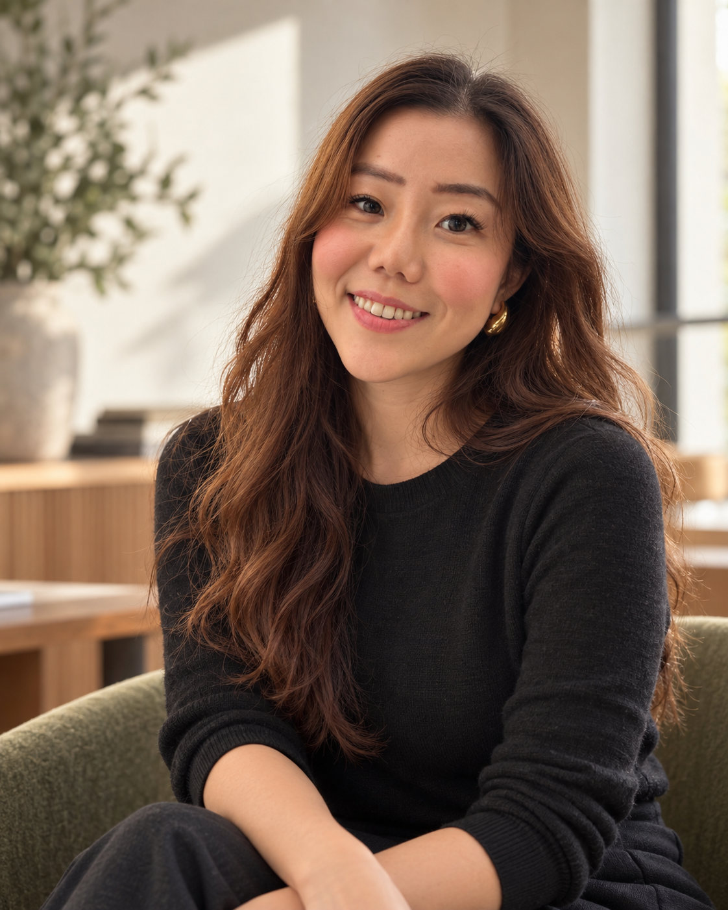

Why Us
제품과 사람, 비즈니스를 함께 이해합니다.
번역만으로는 제품이 현지에서 쓰이지 않습니다. 같은 제품도 시장과 사용자가 달라지면 일하는 방식, 제품을 이해하는 방식, 신뢰를 판단하는 기준이 함께 달라지고, 한국 시장에 맞춰 제품을 만들어 온 팀은 이 차이를 내부에서 발견하기 어렵습니다.

좋은 판단이 팀의 실행으로 이어지도록.
디자인은 화면을 만드는 데서 끝나지 않습니다. 설계 의도와 우선순위를 팀이 이해할 수 있는 말로 설명하고, 다음에 무엇을 할지 함께 정합니다.
사용자 영향·사업 중요도·구현 난이도로 우선순위의 이유를 설명합니다.
디자인 의도와 요구사항, 예외 상황을 개발 전에 정리합니다.
합의한 방향을 팀이 실행할 수 있는 다음 작업으로 나눕니다.
About Second Context
맥락으로 완성하는, 독립 프로덕트 디자인.
Second Context는 Rachel Cho가 이끄는 독립 프로덕트 디자인 스튜디오입니다. 미국 홈헬스케어 SaaS의 파운딩 디자이너로 AI 일정 플랫폼을 설계했고, 글로벌 제약사의 운영 모니터링·인시던트 관리 경험과 글로벌 기업의 제품 현지화를 맡았습니다. 복잡한 규칙과 업무 흐름을, 사용자가 바로 판단하고 행동할 수 있는 제품 경험으로 바꿉니다.
About Second Context- 40+완료한 프로젝트
- 12+함께 일한 글로벌·다국적 기업
- 27+여행한 국가

What we do
복잡한 제품을, 바로 이해되는 경험으로.
세 가지 역량으로 제품의 다음 단계를 함께 만듭니다. 각 역량 아래의 사례는 Second Context를 시작하기 전, Rachel Cho가 이전 경력에서 수행한 프로젝트입니다. 고객사 이름은 밝히지 않습니다.
-
복잡한 업무를 명확한 제품으로
여러 규칙과 정보, 역할이 얽힌 제품에서 사용자가 무엇을 먼저 판단하고 실행해야 하는지 정리합니다. 실제 업무 흐름을 이해하고, 우선순위와 예외 상황을 명확한 화면과 흐름으로 연결합니다.
-
시작부터 신뢰할 수 있는 경험으로
처음 시작하는 순간부터 인증과 예외 상황까지, 사용자가 현재 상태와 다음 행동을 이해할 수 있도록 설계합니다. 상황에 따라 달라지는 흐름을 정리하고, 막히는 순간에도 다음 단계로 이어지는 경험을 만듭니다.
-
시장과 사용 맥락에 맞는 경험으로
언어를 바꾸는 것을 넘어, 사람들이 제품을 이해하고 사용하는 방식을 살펴봅니다. 목표 시장의 언어와 문화, 사용 환경에 맞춰 제품의 표현과 화면 구성을 조정합니다.


Approach
맥락에서 시작해, 실행까지 함께합니다.
제품과 팀의 현재 단계에 맞춰 네 단계로 진행합니다.

맥락 이해
제품과 목표 시장, 사용자와 업무 환경을 살펴 현재 상황을 함께 파악합니다.
문제 정의
사용자 영향·사업 중요도·구현 난이도로 먼저 풀 문제와 우선순위를 정합니다.
디자인 및 검증
사용자 흐름과 화면을 설계하고, 프로토타입으로 사용자와 팀에게 확인합니다.
실행 지원
디자인 의도와 요구사항, 예외 상황을 정리해 개발 과정의 해석 차이를 줄입니다.
네 단계는 협업의 큰 흐름입니다. 진행 방식 페이지에서는 이를 여섯 단계의 실행 과정과 단계별 산출물로 나눠 설명합니다.
Contact
30분 상담으로 시작합니다.
제품과 목표 시장, 현재 고민하고 계신 과제를 알려 주세요. 협업할 범위를 함께 살펴보겠습니다.